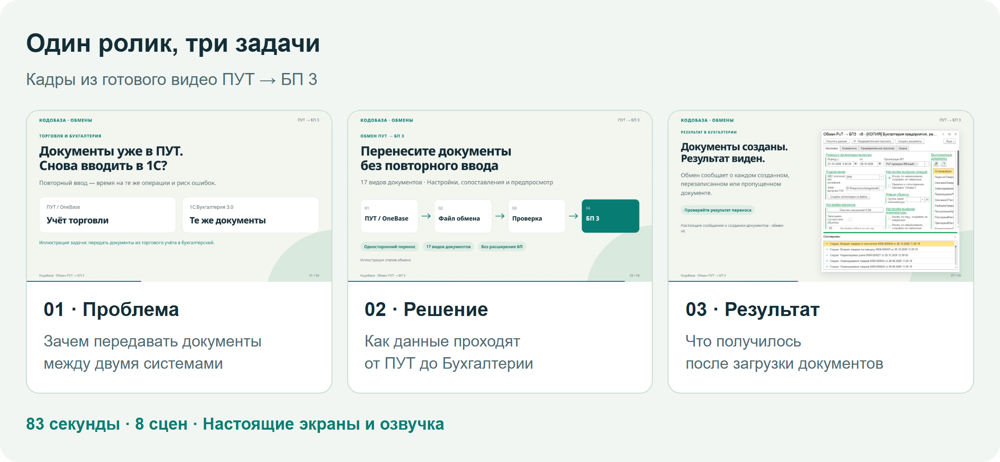
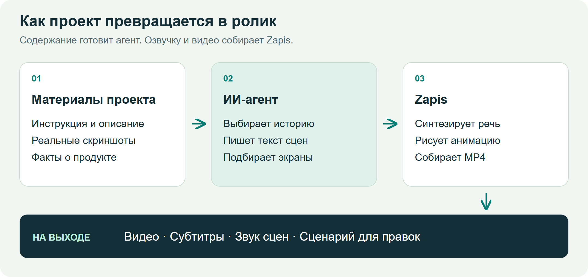
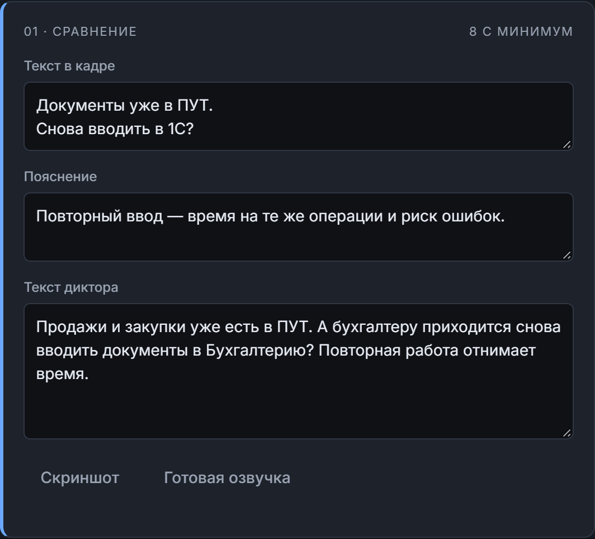
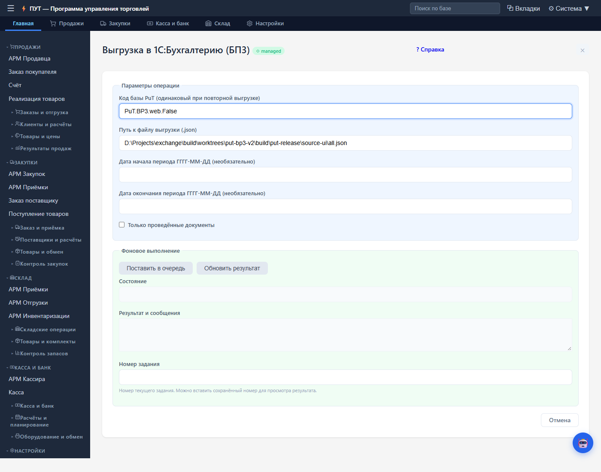
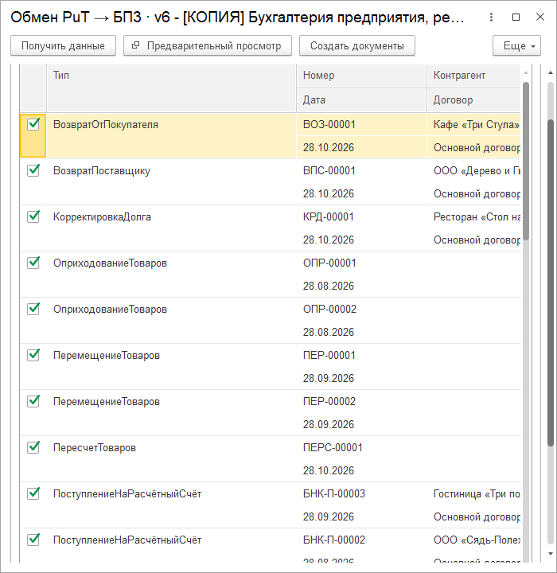
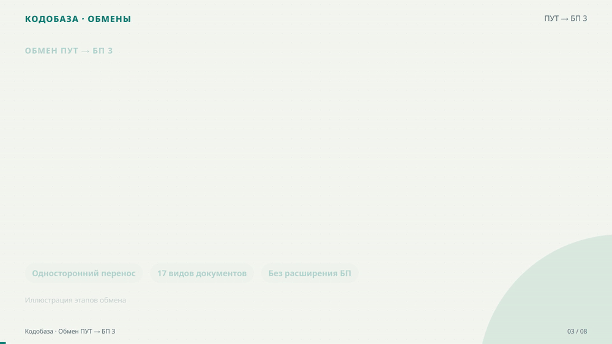
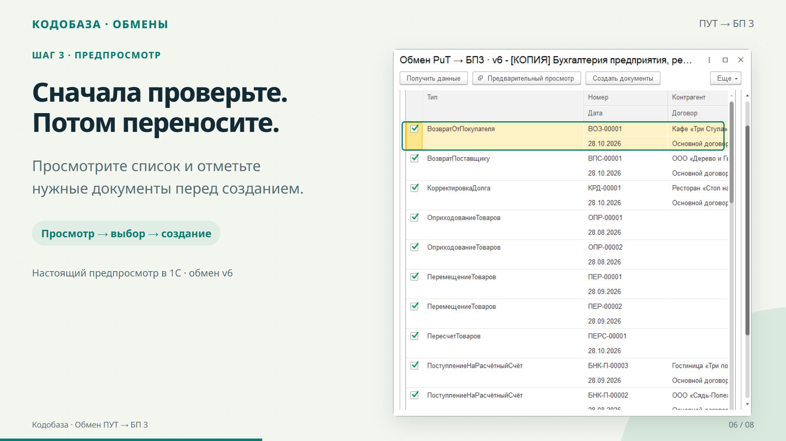

Как я расширил «Запись»: маркетинговые ролики из проекта, скриншотов и озвучки
В предыдущей статье о «Записи» я рассказывал о приложении для работы с речью и текстом. Озвучка там уже была: загружаешь текст, выбираешь голос и получаешь аудио. Когда мне понадобились короткие ролики для карточек своих разработок, решил использовать эту возможность ещё раз. Добавить к речи настоящие экраны программы, подписи и анимацию, затем собрать всё в видео.
Поводом стал ролик о создании маркетинговых видео с Claude Design. Мне понравилась сама идея: показать продукт через короткую историю с движением и голосом. У меня уже работал синтез речи в Zapis. На его основе я стал собирать свой конвейер, в котором материалы остаются рядом с проектом и ролик можно пересобрать после правки.
Сначала покажу результат
Для примера взял обмен ПУТ на OneBase → 1С:Бухгалтерия 3.0. Получился горизонтальный ролик на 83 секунды: восемь сцен, реальные экраны обеих программ, анимированная схема и озвучка. Он уже размещён в карточке обмена на Кодобазе.

Рисунок 1. Три кадра готового ролика: проблема, схема переноса и результат в Бухгалтерии
Один пример на протяжении всей статьи. Сначала объясняю задачу, затем показываю способ решения и результат. Это кадры из готового MP4, собранные в ленту для сравнения.
Полный ролик можно посмотреть в карточке или открыть отдельным MP4. Ниже разберу, откуда взялись его содержание, экраны и движение.
Что добавилось к готовой озвучке
У «Записи» уже был выбор движка и голоса, синтез речи и работа со звуковыми файлами. Для видео понадобился ещё один слой: описание сцен, изображения, длительность показа, подписи и правила появления элементов.
Содержание готовит ИИ-агент. Он изучает проект, выбирает, что показать, и пишет текст диктора. Затем вызывает Zapis. Приложение использует свои механизмы озвучки, а кадры и движение собираются через Remotion. Этот движок позволяет описывать анимацию кодом на React.

Рисунок 2. Схема конвейера: материалы проекта, ИИ-агент, Zapis и готовые файлы ролика
Схема устройства конвейера. Агент отвечает за содержание, Zapis за озвучку и сборку. Скриншоты приходят из работающего продукта.
Монтаж выполняется на компьютере. Синтез речи может быть локальным или сетевым, в зависимости от выбранного движка. Для повторного рендера сохранённого сценария работа языковой модели не обязательна.
Для начала достаточно папки и одного запроса
В папке обмена были инструкция, сведения о выпуске и настоящие скриншоты. Их и использовали для ролика. Мой запрос можно сформулировать так:
Сделай рекламный ролик про обмен ПУТ → БП 3 из этой папки на 60–90 секунд. Покажи проблему и решение, используй готовые скриншоты подходящей версии. Добавь понятную анимацию и озвучку.
Агент читает материалы, составляет историю, подбирает изображения и сохраняет рабочий сценарий. Пользователю не нужно отдельно заполнять бриф, писать JSON или запускать несколько команд по очереди. Технические этапы описаны во внутренних инструкциях агента.
Сценарий можно открыть и поправить в самом приложении. В редакторе отдельно хранятся короткий текст в кадре и фраза диктора. Там же выбираются голос, формат и качество сборки.

Рисунок 3. Карточка сцены ПУТ в редакторе Zapis: текст в кадре, пояснение и фраза диктора
Настоящая карточка сцены в Zapis с материалами ПУТ. Подпись и речь редактируются отдельно. Можно поправить их вручную, даже если первоначальный сценарий подготовил агент.
История важнее перечня возможностей
Для карточки продукта легко написать набор фраз: «удобно», «гибко», «много настроек». Из них трудно понять, что именно получит покупатель. Поэтому сначала определяю задачу зрителя, потом выбираю экран, который подтверждает решение.
В примере ПУТ торговые документы уже находятся в одной системе, а бухгалтерский учёт ведётся в другой. Ролик объясняет, как передать данные и проверить их перед загрузкой. Зритель видит выгрузку, настройки Бухгалтерии, предпросмотр и сообщения о созданных документах.
Такой порядок помогает и при подготовке текста. У каждой сцены появляется задача. Если кадр не объясняет действие и не подтверждает результат, его можно сократить или убрать.
Откуда взялись скриншоты
Для этого ролика экраны уже были подготовлены в материалах выпуска v6. Агенту оставалось выбрать подходящие. В видео использованы настоящий интерфейс OneBase и формы загрузчика в Бухгалтерии, включая предпросмотр и сообщения о результате.

Рисунок 4. OneBase: реальные параметры выгрузки ПУТ в Бухгалтерию из материалов выпуска v6
Исходный экран OneBase. Он показывает, где задаётся период и запускается выгрузка. Этот снимок передаётся в ролик как изображение.

Рисунок 5. 1С: настоящий предпросмотр документов в загрузчике ПУТ → БП 3 версии 6
Исходный экран 1С. Виден список документов, которые можно отметить перед созданием. Это работающая форма, её содержимое не рисовалось для рекламы.
Сначала агент ищет готовые снимки и проверяет, подходят ли они к текущей версии. Если нужного кадра нет, он может сделать его при наличии доступа к приложению. Для сайта используется браузер, для 1С нужна доступная демонстрационная база и инструменты работы с клиентом. Если доступа нет, агент уточняет, какой экран требуется. Сам Zapis получает готовые изображения и использует их при сборке.
Схемы и графику можно придумать и нарисовать. Снимок продукта должен показывать то, что действительно существует в его интерфейсе. Это особенно заметно в кадре предпросмотра: рекламной подписи недостаточно, зрителю нужно увидеть сам список.
Анимация объясняет переходы
В сцене со схемой узлы появляются последовательно: ПУТ, файл обмена, проверка, Бухгалтерия. Пока диктор объясняет следующий шаг, на экране раскрывается соответствующая часть пути. Ниже фрагмент готового ролика, а не отдельная демонстрация другого продукта.

Рисунок 6. Фрагмент готового ролика ПУТ: последовательное появление этапов обмена
Короткий GIF из сцены со схемой. В полном MP4 этот фрагмент сопровождается голосом.
В Remotion положение, прозрачность и появление элемента зависят от номера кадра. Поэтому можно сделать движение стрелок, подсветку этапа, появление карточек и плавное приближение к скриншоту. У длинной таблицы оставляю время на чтение, а переход между системами объясняю схемой.
Для ролика ПУТ макет дополнительно подстроили под конкретные экраны в отдельной рабочей копии рендера. Это часть работы с кодом и компоновкой. Базовые сцены уже дают готовые приёмы, а для другой композиции агент может доработать шаблон. Такие изменения стоит сохранять вместе с проектом ролика, чтобы следующая сборка воспроизводила тот же вид.
Короткая подпись, подробное объяснение голосом
В сцене предпросмотра на экране написано: «Сначала проверьте. Потом переносите». Диктор объясняет, что видно в списке и какое действие выполнить после проверки. Голос и подпись дополняют друг друга, таблицу не приходится закрывать длинным абзацем.

Рисунок 7. Кадр готового ролика: короткая подпись и настоящий предпросмотр документов в Бухгалтерии
Тот же предпросмотр внутри готовой видеосцены. Рамка и подписи добавлены при сборке, сам снимок формы остаётся исходным.
Речь для сцен создаётся отдельно. Длительность показа учитывает фактическую длину аудио, поэтому переход не обрывает фразу диктора. Для сложного названия или сокращения можно изменить произносимый текст, сохранив привычное написание в кадре.
Перед финальной сборкой полезно просмотреть раскадровку и прослушать фрагмент. Читаемость скриншота, темп речи и продолжительность сцены проверяются по отдельности. После сборки смотрю сам MP4 со звуком и перемоткой.
Что остаётся для следующей правки
В рабочей папке сохраняются сценарий, изображения, озвучка сцен, готовое видео и субтитры. Поэтому можно вернуться с обычной просьбой: «Сделай предпросмотр крупнее», «Убери это обещание» или «Замедли сцену с результатом».
После изменения обработки достаточно обновить соответствующий снимок и текст. Для моих карточек это даёт возможность делать серию роликов в одном оформлении и постепенно улучшать их подачу.
Исходники и инструкции находятся в репозитории Zapis. После однократной настройки можно работать через редактор или поручить подготовку агенту с подключённым навыком из репозитория. Для другого продукта меняются материалы и история, способ сборки остаётся тем же.